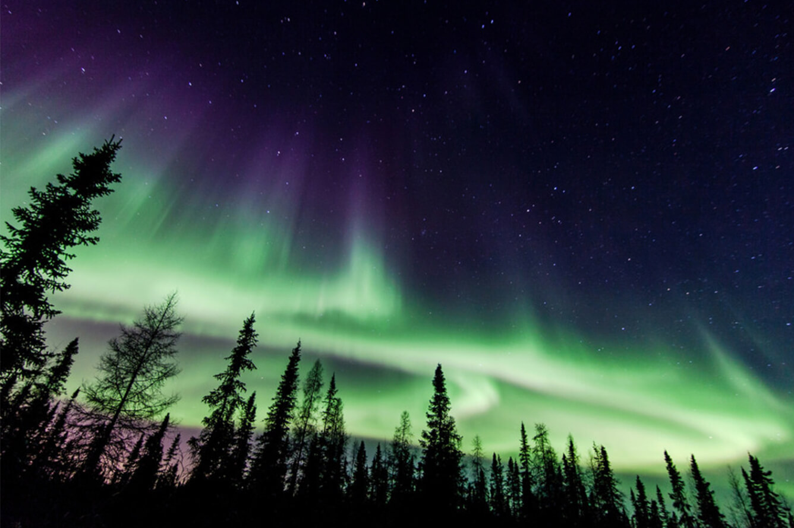
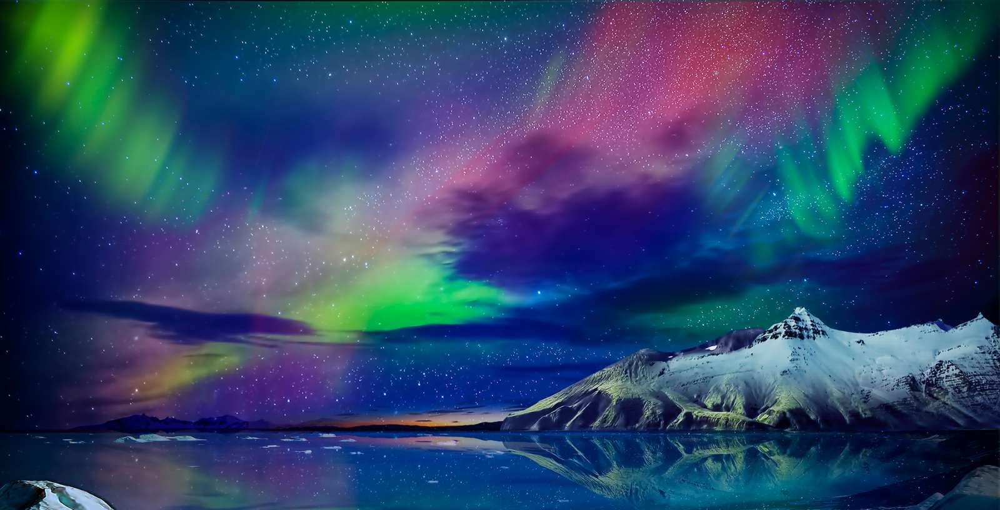
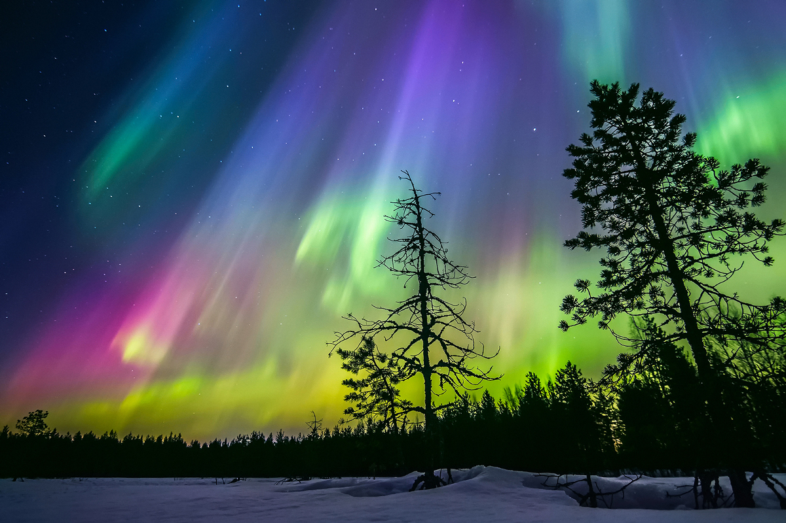

CỰC QUANG
Trong thiên văn học, cực quang là một hiện tượng quang học được đặc trưng bởi sự thể hiện đầy màu sắc của ánh sáng trên bầu trời về đêm, được sinh ra do sự tương tác của các hạt mang điện tích từ gió mặt trời với tầng khí quyển bên trên của hành tinh. Các cực quang mạnh nhất thường diễn ra sau sự phun trào ánh sáng của Mặt Trời. Những dải sáng này liên tục chuyển động và thay đổi làm cho chúng trông giống như những dải lụa đầy màu sắc màu trên bầu trời. Đây có thể coi là một trong những hình ảnh đẹp của tự nhiên.
Trên Trái Đất, Mộc Tinh, Thổ Tinh, Thiên Vương Tinh và Hải Vương Tinh, các cực quang được sinh ra do tương tác của các hạt trong gió mặt trời với từ trường của hành tinh, và vì thế chúng là rõ nét nhất ở các vĩ độ cao gần các cực từ. Vì lý do này, cực quang ở Bắc bán cầu Trái Đất được gọi là bắc cực quang, hay ánh sáng bắc cực; và ở Nam bán cầu thì là nam cực quang. Tuy nhiên, cực quang cũng diễn ra trên Kim Tinh và Hỏa Tinh mà chúng lại gần như không có từ trường của hành tinh. Trên Kim Tinh, các phân tử của khí quyển được tích tụ năng lượng trực tiếp từ gió mặt trời; trên Hỏa Tinh, các cực quang diễn ra gần các điểm dị từ khu vực trong lớp vỏ hành tinh, là tàn dư của từ trường cũ của hành tinh (giả thiết) mà ngày nay không còn tồn tại nữa.
Trên Trái Đất, cực quang diễn ra khi các đới bức xạ Van Allen trở nên "quá tải" với các hạt cao năng lượng, sau đó chúng đổ xuống các đường sức từ và va chạm với lớp trên của bầu khí quyển Trái Đất.

Ảnh. Hình ảnh Cực quang...
|

Ảnh. Hình ảnh Cực quang...
|

Ảnh. Hình ảnh Cực quang...
|
Âm thanh của cực quang
Người ta thường cho rằng việc nhìn thấy cực quang bao giờ cũng kèm theo các tiếng nổ tanh tách hay tiếng kêu rền. Sự lan truyền của các âm thanh này trong khí quyển (giống như khi người ta nói làm dao động các phân tử trong không khí) là không chắc chắn. Cực quang diễn ra khoảng 100 km phía trên Trái Đất trong các điều kiện không khí cực kỳ loãng, có nghĩa là chúng không thể truyền các âm thanh nghe được đủ xa để có thể chạm tới mặt đất. Một khả năng là các sóng điện từ được biến đổi thành sóng âm bởi các vật thể gần với người quan sát, hoặc trực tiếp ảnh hưởng tới cơ quan thính giác của người quan sát. Đối với người Inuit và các nền văn hóa bắc Canada, người ta đã biết một thực tế là sự diễn ra của các tiếng kêu hay các tiếng hát là điều có thật. Các âm thanh này nghe thấy chủ yếu khi người quan sát đã rời xa các chỗ ồn ào hay có chiếu sáng - thông thường trong các chỗ lạnh giá và không có gió của đêm đông. Việc nghe thấy các âm thanh lạ được ví với các sự kiện tâm linh và nó được khắc sâu trong trí nhớ của mỗi cá nhân trong cuộc đời họ. Các âm thanh cực quang này được so sánh với âm thanh của hợp xướng rạng đông. Trường đại học công nghệ Helsinki đã thực hiện việc kiểm tra và ghi âm các âm thanh này. Theo báo Kaleva, người ta đã ghi nhận có các tiếng kêu rền, tiếng ầm và tiếng nổ khi có các cực quang vùng cực với mức độ sáng cao.